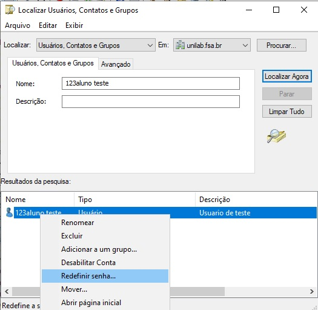
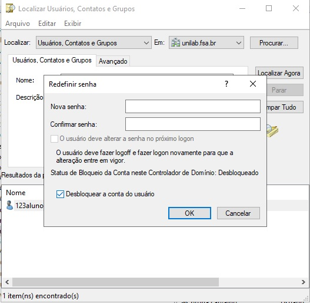

Para redefinir a senha da plataforma Moodle, Wi-Fi e da rede dos computadores dos labarotórios de informática para alunos, professores e funcionários é necessário acessar o servidor unilab.
Ao alterar a senha do usuário no servidor as três senhas serão redefinidas, pois estão atreladas ao unilab.
Dentro do servirdor no menu do Windows clique em ferramentas administrativas > Usuários e Computadores do Active Directory clique no ícone Localizar usuários 
Certifique-se que o campo "Localizar" está a opção Usuários, Contatos e Grupos e a opção "em" está unilab.fsa.br

Digite o nome completo do usuário ou RA e clique em Localiza Agora
Ao localizar o usuário clique com o botão direito sobre o usuário e clique na opção redefinir senha
Senha padrão é o CPF do usuário somente números, digite e confirme a senha. Certifique-se de habilitar a opção Desbloquear a conta do usuário e clique em OK